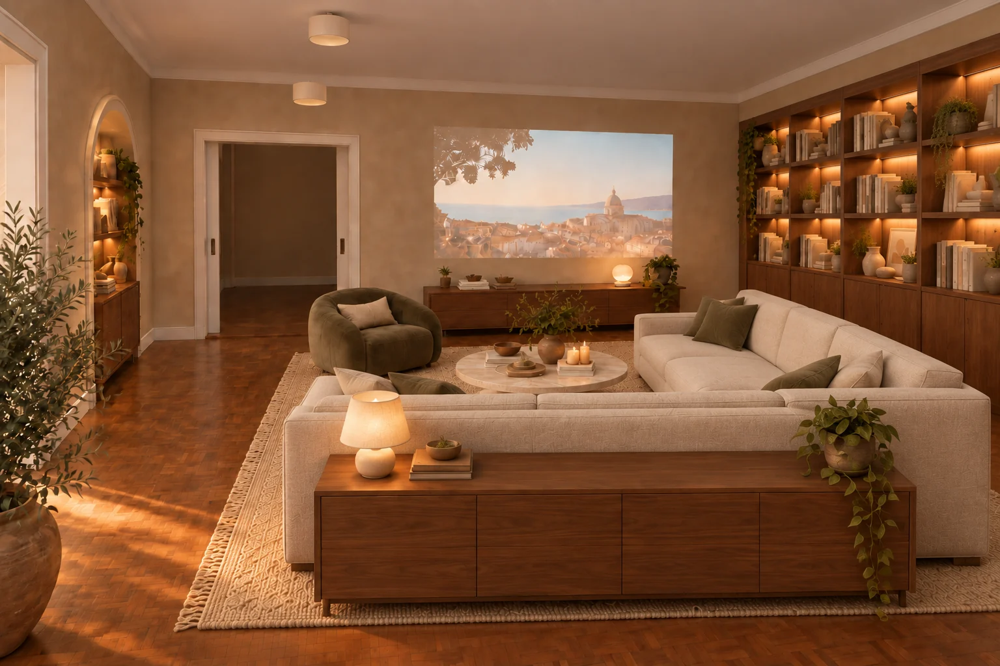
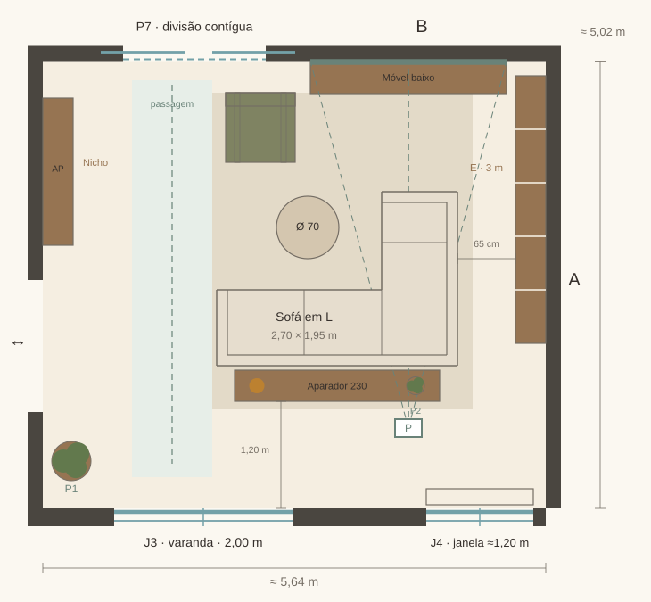

CASA NOVA / OPÇÃO 05 · REVISÃO 04
Linhas direitas. Mais espaço para livros.
Um sofá em L de perfil mais fino, uma estante maior e um aparador atrás do sofá. Mantêm-se os tons de linho e verde-azeitona, a madeira quente e o cinema para o fundo.

Disposição e luz

P1 = planta no chão · P2 = vaso sobre o aparador · E = estante · P = projetor no teto · T = candeeiro. Cotas de estudo em metros.
As três alterações
Um sofá mais estruturado
Braços finos, linhas direitas e almofadas de assento mais firmes, em tecido claro de trama lisa. A dimensão proposta passa a cerca de 2,70 × 1,95 m, com o retorno à direita de quem olha para o filme.
Uma biblioteca de três metros
A estante cresce de 1,15 m para cerca de 3,00 m ao longo da parede direita. Cinco módulos, livros, cerâmica e arrumação inferior. O sofá aproxima-se do centro, deixando 65 cm para alcançar as prateleiras.
Um aparador atrás do sofá
Madeira quente, frentes simples e cerca de 2,30 × 0,35 m. O candeeiro e uma pequena planta passam para o tampo, libertando o chão. Fica aproximadamente 1,20 m entre o aparador e a fachada.
O mesmo ambiente acolhedor
Mantêm-se a poltrona verde-azeitona, o tapete, o nicho com livros e a parede de projeção. A luz das estantes pode baixar ou apagar durante os filmes.
Passagens, medidas e pontos de luz
Circulação: 90 cm na faixa principal à esquerda; 65 cm junto à estante para acesso aos livros. Atrás do aparador, cerca de 1,20 m até à fachada, reduzindo para cerca de 98 cm no pequeno trecho alinhado com a grelha/radiador. São medidas do esquema, a confirmar no local.
G1/G2: manter a intenção de luz geral regulável. E1: alimentação para a estante ampliada. N1/A1: luz do nicho e possibilidade de aplique. T: candeeiro agora sobre o aparador; prever alimentação junto à peça, com o cabo fora da passagem. P: reserva horizontal no teto para o projetor, cuja montagem depende do equipamento escolhido.
{kind=link}
{kind=link}